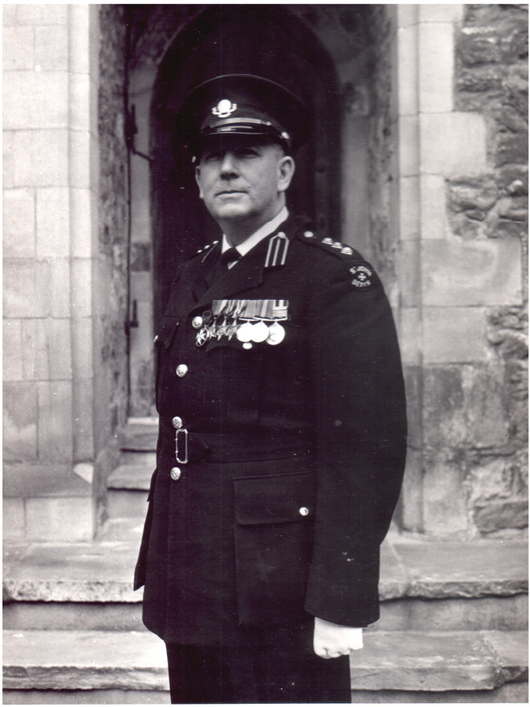
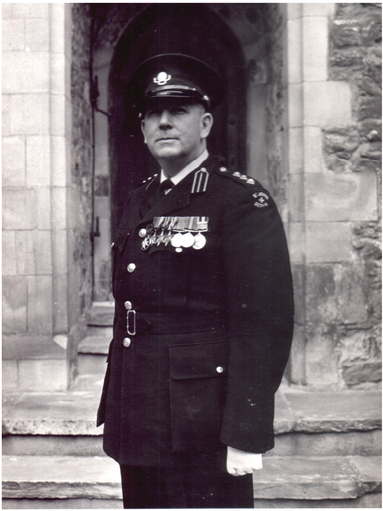
Vic certainly had an eventful life. He was born in Reading (Berkshire) in 1919, and started work on the Railways as soon as he left school at the age of 14. His father was an engine driver, and a keen volunteer for St John's Ambulance. Vic followed suit, qualified as an engine driver, and started his lifelong voluntary work for St John's.
He soon found himself as an engine driver in World War Two, serving with the Royal Engineers (or Sappers). This found him transporting Russian troops through Persia, taking part in the invasion of Sicily, and later driving locomotives in the Italian mainland. Here, he witnessed (among other things) the Mustard Gas disaster at Bari.
In 2003 Vic, stumbled across an old booklet which was his "Soldiers Guide to Sicily . The ``Soldiers Guide" was handed out to him just before the Sicilian landings of ``Operation Husky" of July 1943, in which he took part. This booklet is quite a fascinating bit of history, and some details of Operation Husky can be found at this military history site
I have displayed Vic's medals at the end of the scans of the ``Soldiers Guide".
Vic married Peggy after the war, and they had two children. Their son Bob still lives in Reading, and is active in the Tilehurst branch of the Royal British Legion . (Bob is currently Vice Chairman.) Their Daughter Susan now lives in Wales. It was Vic, along with many other friends, whose voluntary work created and built the Tilehurst branch of British Legion. He served as both secretary and president there.
Peggy was very musical, and played Piano at the British legion. Unfortunately, she died young. I don't know enough about her to say much more, but here is a photo of Peggy.
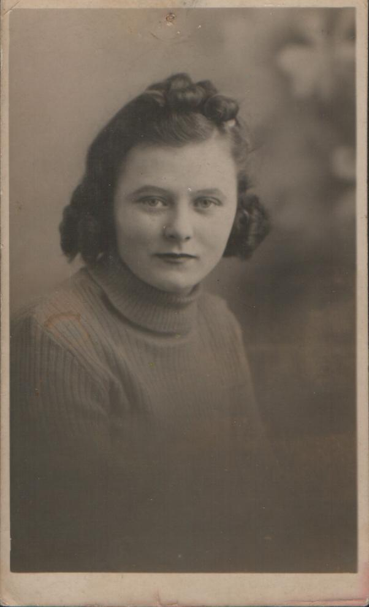
Here are some photos giving you an idea of Vics time in St Johns, and doing first aid work and training for British Rail, where we continued to work as a driver until his retirement. The first Photo is a picture of Vic being made a Officer Brother of the order of St John. Later he was made a Commander of the order. The next three photos shows Vic in action with his British Rail competition team. These first aid competitions involve the creation of very realistic situations which the team, and individual team members, must make on the spot decisions and show their first aid skills. The casualties are well trained and well made up, and the first aid performance is judged by a team of doctors. The third picture shows three different St John's teams showing off silverware. In the Top photo, a young Vic is on the far right, with his father taking centre stage. Vic is centre in the middle photo, and on the right in the bottom photo. There are more prizes, including the British rail team (The fluffy toy was a British Rail Prize Mascot - named ``Wogan's Budgie".) The last photo shows Vic in full St John's gear on the day he received the Long Service Medal of the Order of St John. He was also awarded the British Empire Medal for services to St John's Ambulance.
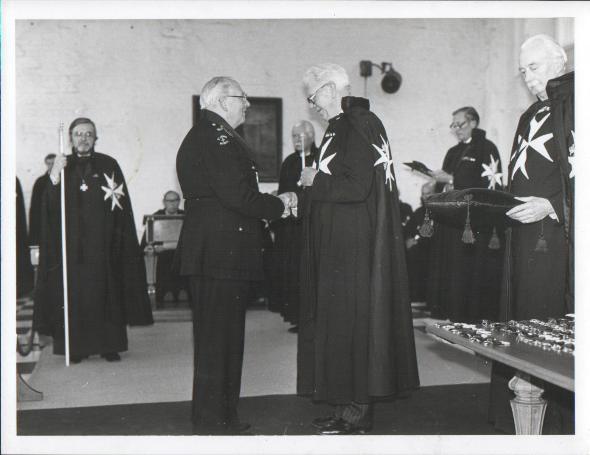
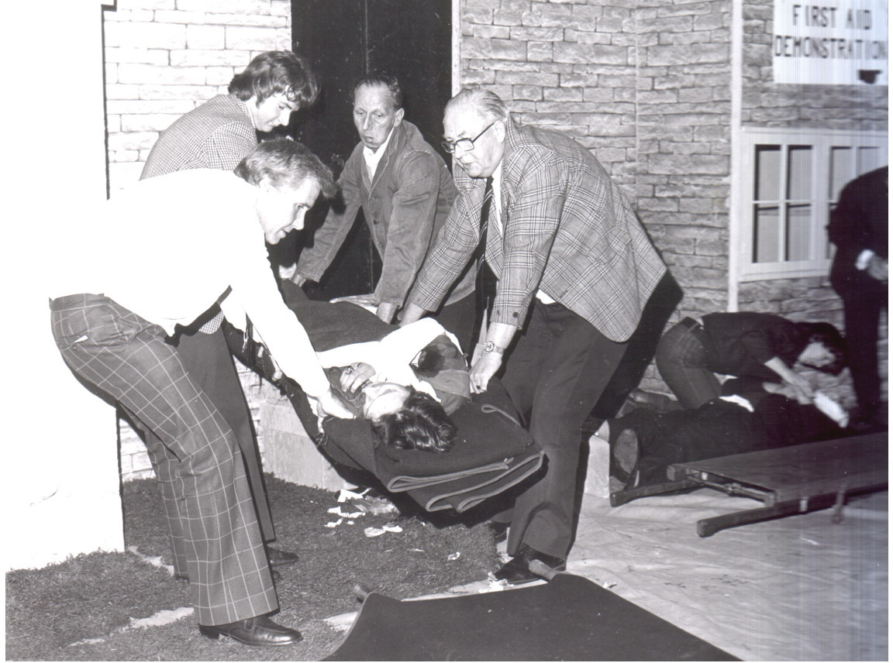
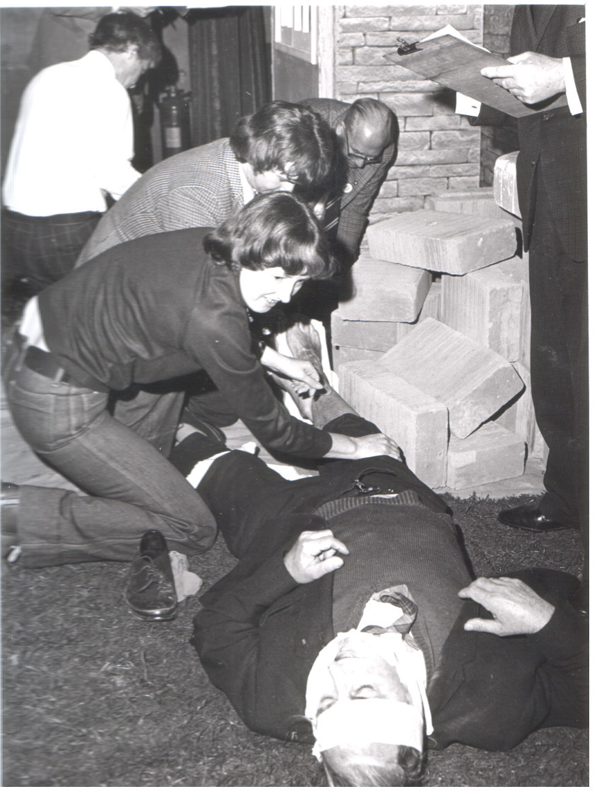
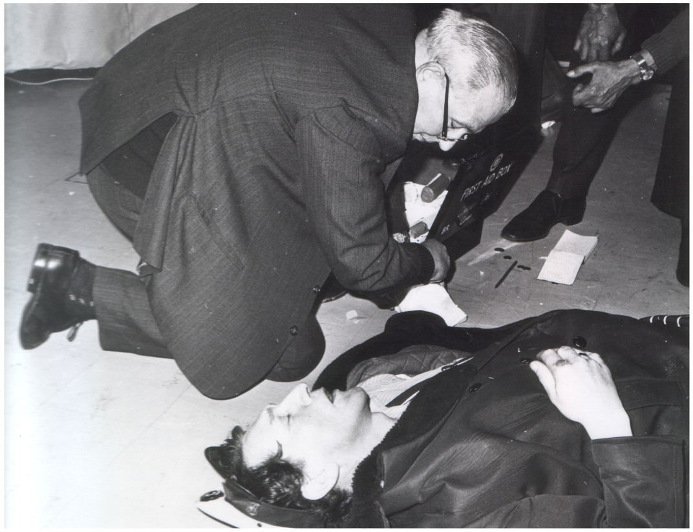
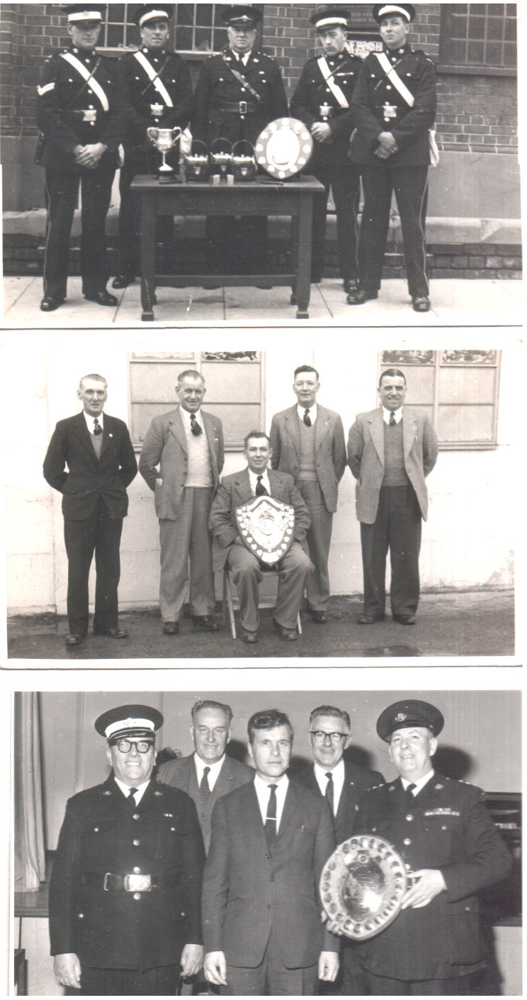
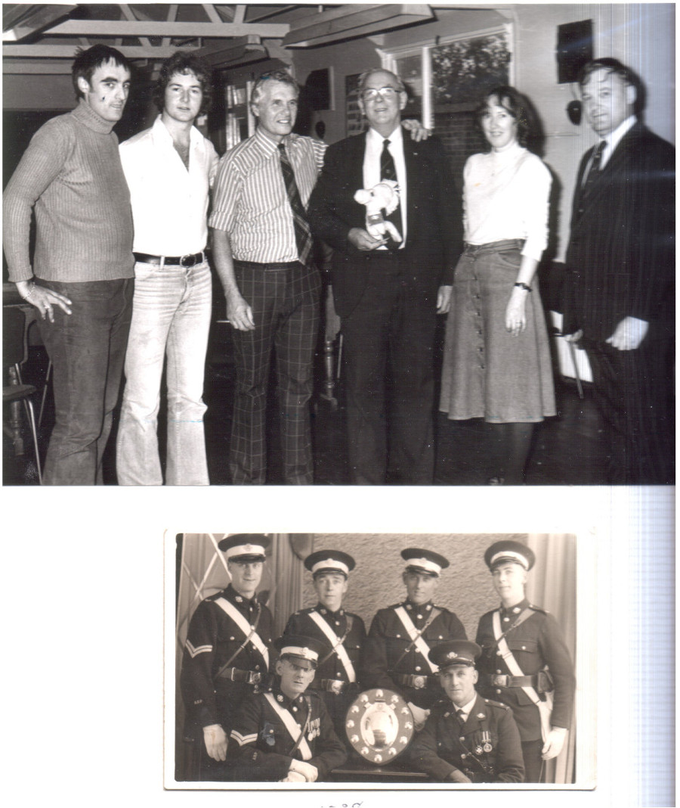
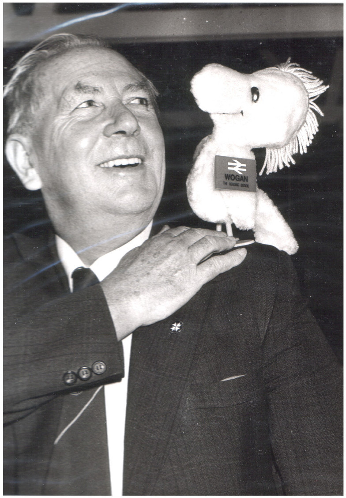
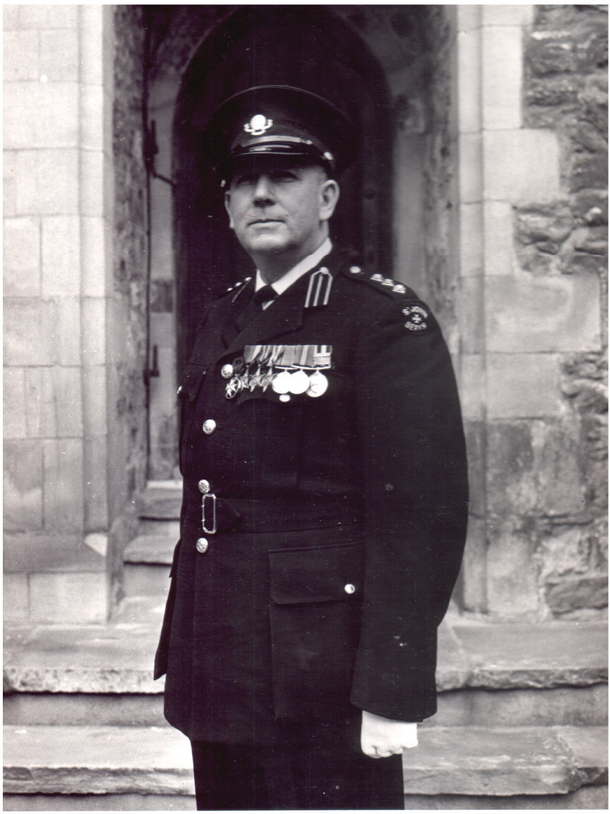
Right click on any photo to get a better view (at least it works for the firefox web-browser).
My Mum had been in contact with the British Legion because of my Dad's illness in the early 1970's, and was widowed in 1977. Later, she acted as interpreter between the Tilehurst branch of the British Legion and the Legion's German counterpart - the VDK. Mum and Vic got married in 1979.
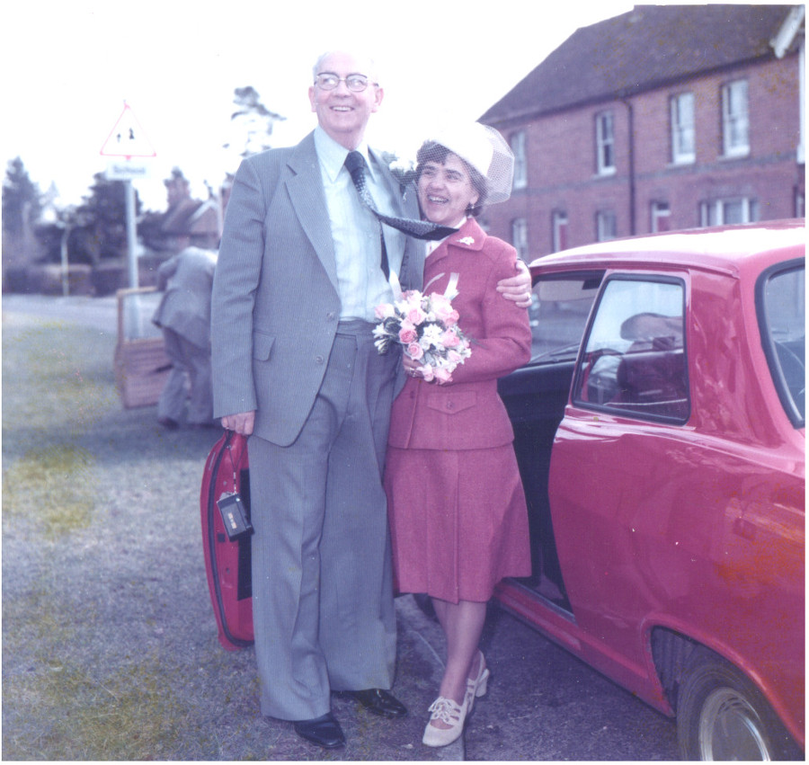
Vic was always on the go, whether organising first aid courses, teaching first aid to young offenders, or doing things for the British legion. He seemed to have endless energy. But, as old age and infirmity crept up on him, he eventually slowed down. For now, I shall just leave you with a picture of the elder Vic, in his beloved garden, with me.
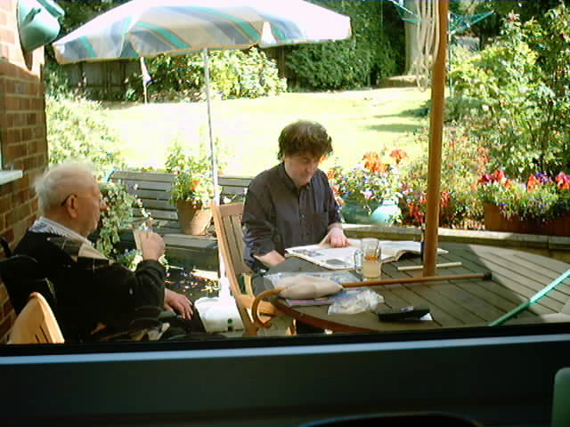
Later (at some point) I shall extend this page. This rewrite was posted July 2013, with a minor revision December 2013.
These are from left to right; Officer of the Order of St John of Jerusalem, 1939-45 Star, Middle East Star, Pacific Star, Defence Medal, 1939-1945 Medal, and the Long Service Medal of the Order of St John.
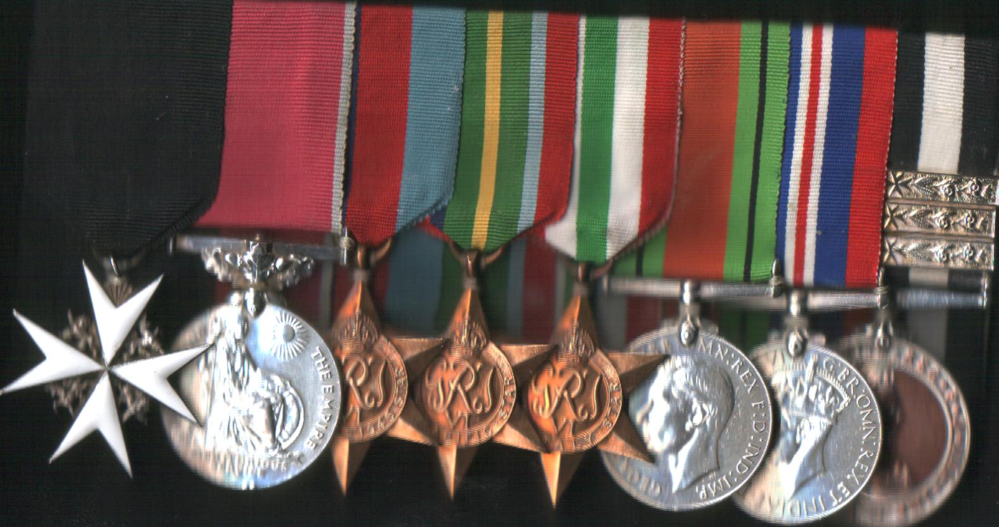